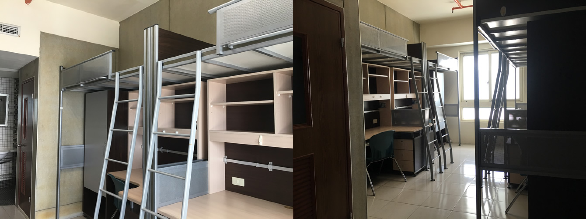
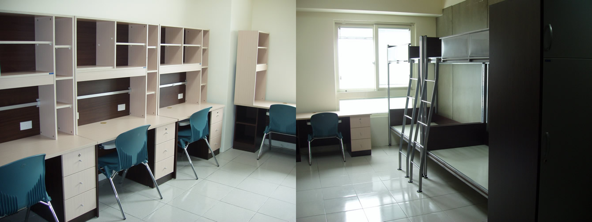
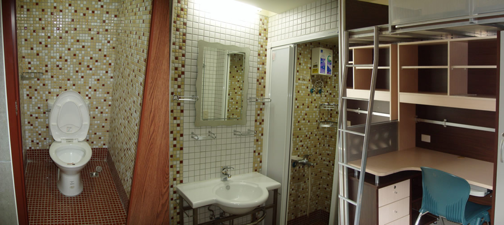

Room Type: 3 people, 4 people (The types of bedrooms are triple shares and quad shares. Due to space limitations, residents will be selected randomly by the computer system.)
Dorm fee : 19,250 NTD/Semester
Deposit : 5,000 NTD/year
Students who have been approved should pay off all relevant fees within the appointed time period, plus they must stay for one academic year. For those who stay less than one year, the dormitory deposit will not be refunded.
Maintenance fee: 3,000 NTD/Semester (24-hour security/shuttle bus/internet)
Miscellaneous :
- Water and electricity bill: charged according to amount used
- Internet fee: 0 NTD
- Student dorm committee: 100 NTD/Year
Facilities :
- Elevator.
- Single bed framed desks, wardrobes, showers.
- Every two levels has a seating area with two fridges, microwaves, and induction cookers.
- Top floor is a public laundry area for washing and hanging clothes to dry.